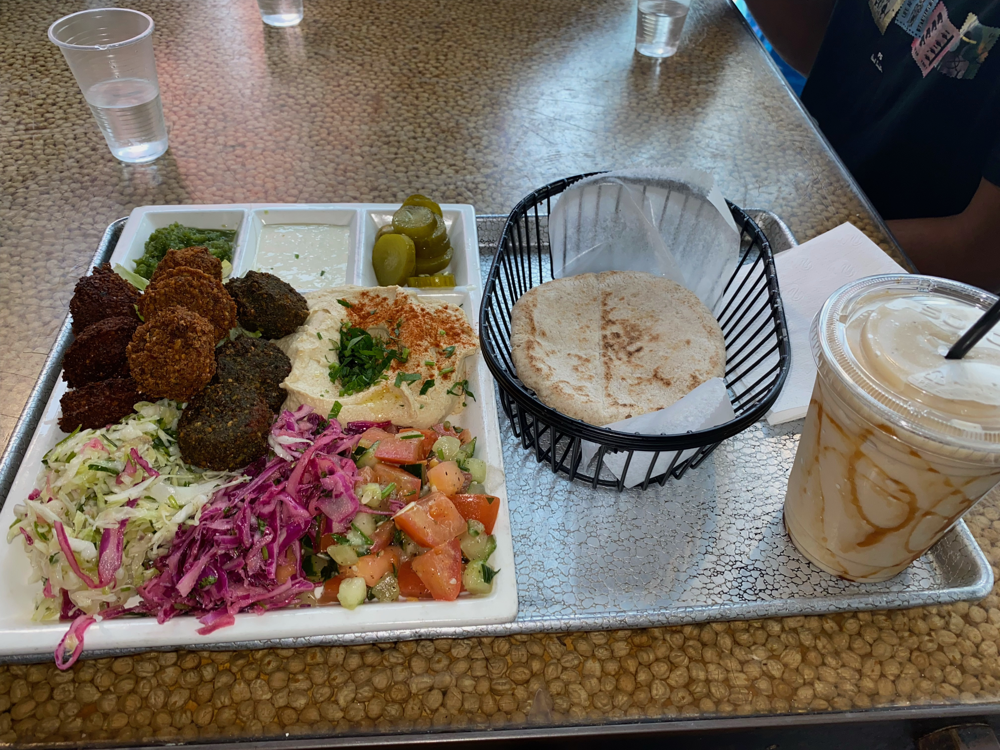
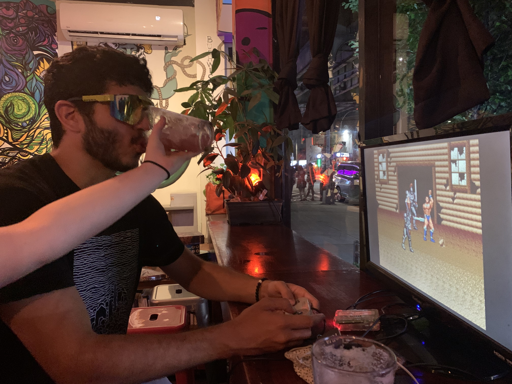
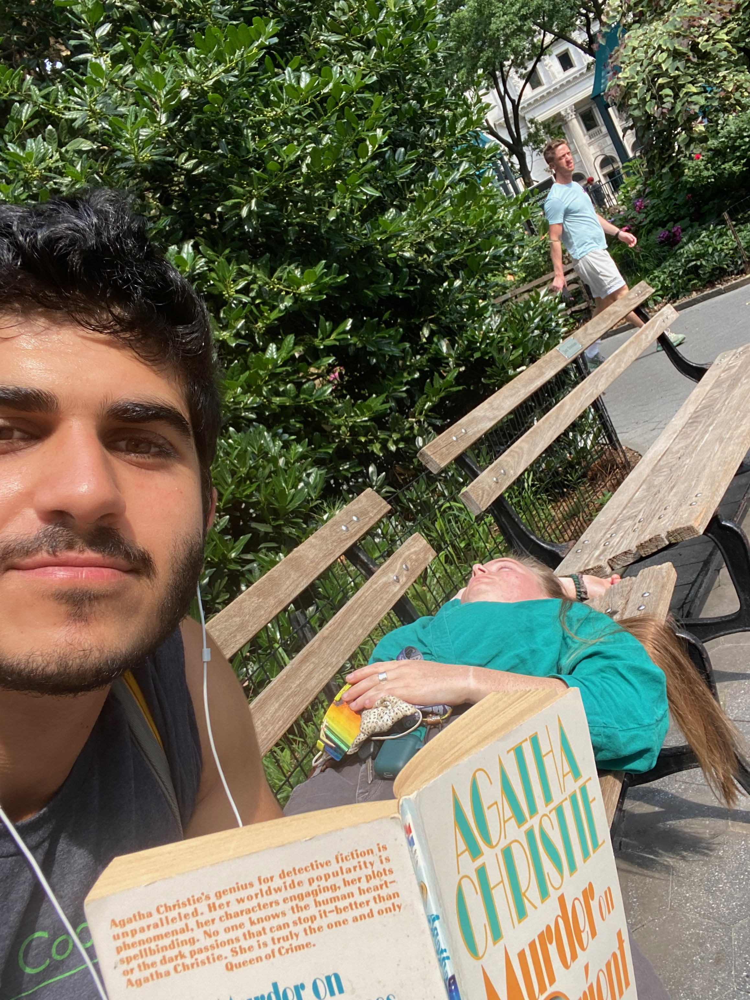
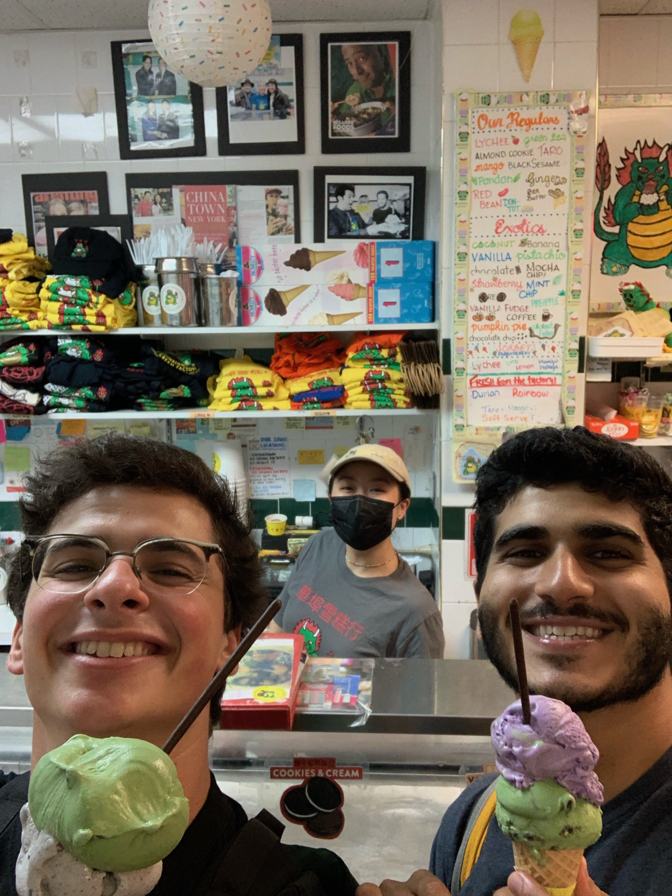

Day 43: Brightness
July 17, 2021
I heard from a few people that my last entry was depressing. There was a certain spirit in my first few blogs that seemed to have withered over the last 12 days, and in that blog, I didn't sound like myself. I am here to convince you that that writing spirit is still here.
Allow me to recap for you my first few days in New York City.
Thursday, July 8
I woke up in Millburn, NJ, and enjoyed a nice chat with my friend Jonathan (and his 13-year-old son, Parker). I then biked into the city, which I described in my last post:
I biked 40+ miles into the Big Apple from eastern New Jersey, bypassing public nudity and the remnants of a flood, and even riding on a highway by accident.
(Excuse my use of the block quote when unnecessary; quotes are prettier as blocks; also grammar rules are fake.) Indeed, I biked by naked people, and indeed, I biked on the highway, though each event was mutually exclusive. What’s funnier, I rode by a sort-of pond, which would have been kinder to the eyes if not stood in the middle of the road I was trying to cross.

After a pretty ride along the Hudson, I met up with my friend Adelaide in Manhattan. (This time, I couldn’t tell her to stop talking; she was hosting me!) I showered off the dried blood from one of my earlier falls––I fell at a skate park, where, of course, I tried a trick and failed––and put on my pineapple-decorated Hawaiian shirt. My buddy Neehaar, a former co-intern at Carbon, joined us for the night. We enjoyed hand-rolled-in-front-of-you sushi at Kazunori, and eventually went back to Neehaar’s to meet his roommates. They told me about their jobs at Morgan Stanley and McKinsey, and I told them I was biking. (Just biking, I heard in return.) Someone complimented me for “having the confidence to wear Chacos,” which I think became less of a compliment when he discovered I didn’t also go to Yale.
Eron and Megan––two familiar names, if you’ve kept up––joined for a night out. Everything in New York is so expensive; that is, except for pizza. Pizza is 99 cents here. So, we got pizza, obviously.
Friday, July 9
The next morning, I woke up with an aching stomach, and I couldn’t recall to what part of the night it should be attributed. Then I remembered the pizza.
Adelaide and I went for a morning walk around Midtown. I hadn’t been to the city since my sophomore year of college, and frankly, it didn’t match that in my memory. I recalled it being louder, less smelly, and people being nicer. Some key takeaways at this point: traffic laws are suggestions, biking here is hilarious (drivers have literally no regard for you), and the city smells.
We got morning bagels and coffee at Newsbar, which were fantastic. We arrived at Union Square Park, where I had my first taste of the weird stuff that happens here. The fountain in the center of the park was under repair, which gave some yogi the chance to perform his routine atop it. The repair workers were literally power washing him. It was absurd.
For every obscenity, it seems, there is a New York beauty. For instance, just aside him, a man played on his grand piano for all the parkgoers to hear. It was a brilliant performance.
We visited a few thrift shops and bookstores before heading home. I boarded my bike and took off for lower Manhattan, where I met up with Neehaar and a few more of his Yale buddies. (These ones did not boast their careers.) We ate brilliant Mediterranean food at Nish Nush:
We went to a park along the Hudson River. I read my copy of Slate House, and called my dad for his birthday. A trip home, with a few stops for cheesecake, wrapped up the afternoon.
That night, I met up with a few UNC friends who were celebrating their birthdays in the area. We visited a few bars and clubs, at one of which an older woman looked at me and said, “Syrian!” I turned my head like one of those confused dogs, and walked over to her. She shouted drunkenly about vaccines or her grandparents or something, before I walked away.
{kind=link}
Those who know me well may recall that I was once a professional video gamer. I was able to channel that old identity at one of the outings:
Also, I got 99 cent pizza again.
Saturday, July 10
I’ve gone to a handful of bookstores along this trip. I haven’t mentioned it, but I’ve gone for pretty much one reason: to find Agatha Christie novels.
That morning, I walked to Union Square again, where a tiny stand sold used books. Of the small selection––maybe 40 books––there were five Agatha Christies. I bought a few, and immediately began the most famous of the bunch: Murder on the Orient Express.
Megan joined my bench for a bit, but fell asleep soon after.
I woke her up after 20 minutes or so, and we marched over to Mimi’s. I recounted our lunch conversation in the previous post.
We subway’ed to Brooklyn, where we spent the rest of the night. Some highlights: a coffee tonic from the non-alcoholic bar Getaway, and Dokebi’s Bibimbap served in a sizzling stone bowl.
Sunday, July 11
I biked to a WeWork early in the day, where I uploaded some photos for the Greenway, and read about kombucha for far too long. For my lunch break, I joined Eron at the local Chobani Café. (A few days earlier, I had tried to go to the Chobani Café alone, but Eron prohibited me on the grounds of “I work there” and “I could get you a discount.” He did, ultimately.) After that, we spent just about the whole day together, and I managed to finish Murder on the Orient Express before dinnertime.
Dinner with Eron is always a trip. This time, we had four courses, at three different restaurants, each listed in some variation of a "Places You Have to Eat in New York" list. Our first stop was Tasty Hand-Pulled Noodles, where we ordered, well, tasty hand-pulled noodles. We chased duck legs with soup dumplings that left singe marks on my tongue. I should share the knowledge that Eron shared with me: you eat soup dumplings by biting off the top, sucking out the soup, then putting the whole thing in your mouth. This cools the soup, and the breading enhances the flavor of the soup already in your mouth. Now, what I did: I put the whole thing in my mouth and felt my tongue cramp. After that, we went to Xian’s Famous Foods, where I was exposed for my inability to use chopsticks:
Take up your disappointment with the above video with someone else.
We ordered lamb cumin hand-ripped noodles, which would have been spectacular, if not for my light aversion to cumin. Then we got mochi and taro ice cream from Chinatown Ice Cream Factory, and took a selfie with the waitress:
I hope these stories shed more light on the brightness of this trip. One more post will wrap this up, which will include takeaways, favorite, existential thoughts, and a story about an invitation to a private art gallery.
Until soon––